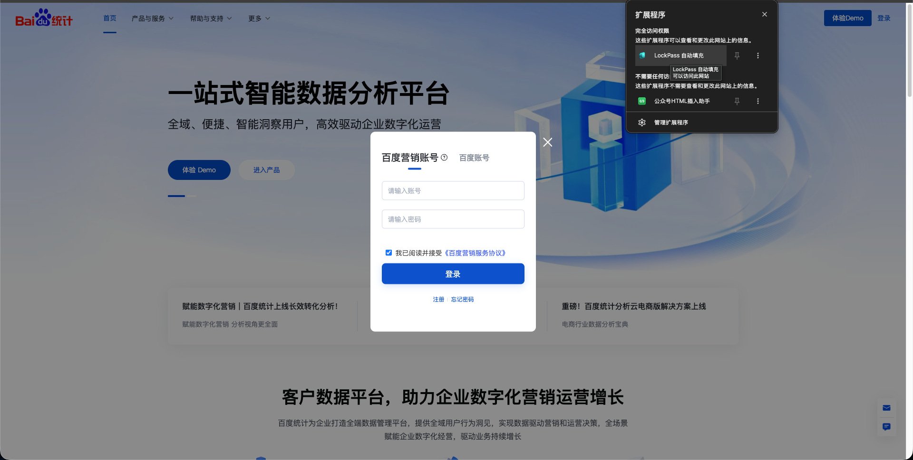
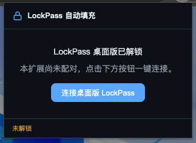
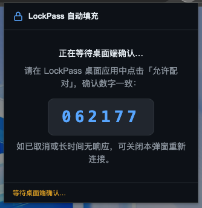
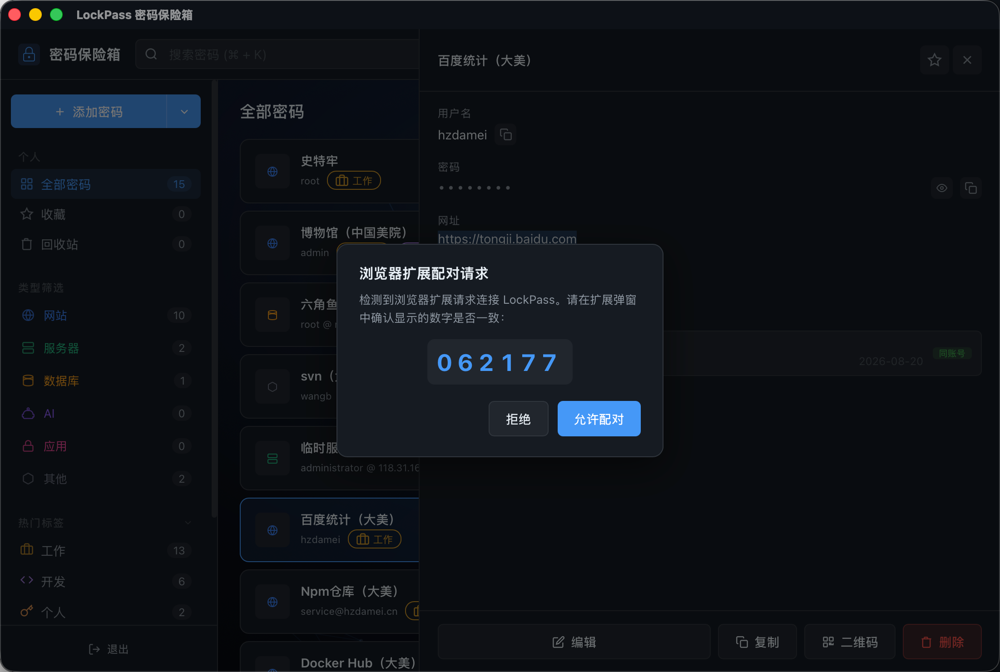
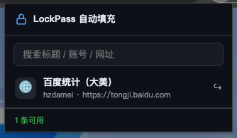
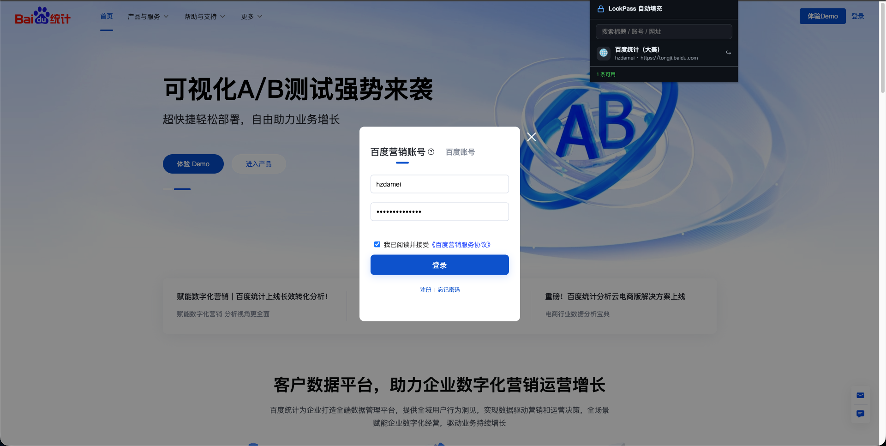

| 通道 | 适用版本 | 通信方式 |
|---|---|---|
| 页面桥通道 | 浏览器版(file:// / localhost dev / GitHub Pages) | lockpass-bridge.js → 页面 postMessage → ExtBridge 内存解密 |
| 本地 HTTP 通道 | 桌面版(Tauri 封装) | 扩展直连 127.0.0.1:33555,一键配对(nonce 弹窗确认)后按域名取数 |
打开 chrome://extensions(Edge 为 edge://extensions)
右上角开启「开发者模式」
点击「加载已解压的扩展程序」,选择仓库的 extension/ 目录
使用「双击 dist/index.html」的本地版时,需在扩展详情页开启 「允许访问文件网址」,否则 popup 会一直提示未解锁。
代码有改动时:chrome://extensions → 该扩展卡片点「刷新」,再刷新 LockPass 页面。
浏览器版无需配对,解锁后扩展自动就绪。支持三种运行场景:
| 场景 | 启动方式 | 说明 |
|---|---|---|
| 本地文件版 | 双击 dist/index.html | 需在扩展详情开启「允许访问文件网址」 |
| 本地开发版 | npm run dev 后访问 http://localhost:1420(或 127.0.0.1:1420) | Vite 开发服务器 |
| GitHub Pages 在线版 | 打开 https://trexwb.github.io/lockPass/ | 部署后的正式在线地址 |
扩展在 LockPass 主应用域名上注入 lockpass-bridge.js(manifest 第二段 content_scripts.matches),与页面内 ExtBridge 的 postMessage 协议桥接:
LockPass 解锁时,页面生成会话令牌写入 sessionStorage,经 ExtBridge 广播 ready → 桥转发 LP_READY → 扩展进入就绪态
扩展请求条目/密码时,页面在自身内存中解密(Web Crypto,密钥不可导出),结果经 LP_ENTRIES / LP_PASSWORD 异步返回
锁定/登出时广播 locked → 扩展回到未解锁态,令牌即失效
打开并解锁 LockPass(上述任一场景均可)
打开目标登录页(如 GitHub、某后台系统)
点击工具栏 LockPass 图标,弹出条目列表(支持搜索标题 / 账号 / 网址)
点击条目 → 用户名与密码自动填入表单,提交按钮短暂高亮
扩展只负责填充,填好后由你确认并手动提交,避免误操作。
| popup 提示 | 含义 | 处理 |
|---|---|---|
| 请先打开并解锁 LockPass 主应用 | 未收到解锁广播 | 打开/刷新 LockPass 并解锁;file:// 版检查「允许访问文件网址」 |
| 没有匹配的密码条目 | 密码库为空 | 先在主应用添加条目 |
| 填充失败:页面未就绪 | 目标网页无扩展响应 | 刷新目标页面后重试 |
| LockPass 页面响应超时 | 解密请求 5 秒未返回 | 确认 LockPass 保持打开且已解锁 |
桌面版是 Tauri 封装(src-tauri/),应用内嵌一个仅绑定 127.0.0.1:33555 的本地 HTTP 服务(src-tauri/src/server.rs,tiny_http),浏览器扩展直连该服务取数。
解锁同步:桌面端解锁时,前端经 tauri-server-bridge.js(window.TauriServer)调用 server_ready + server_set_entries,把明文条目同步到 Rust 内存(仅内存,不落盘);锁定/登出调用 server_lock 清空
一键配对:扩展首次使用时发起配对,桌面端弹窗展示 nonce,用户确认后发放 token(仅存 Rust 内存与扩展 chrome.storage.local)
自动填充:网页发现密码输入框时,content.js 上报 LP_PAGE_READY(domain);扩展就绪后调用 GET /credentials?domain=(Bearer 鉴权)取回条目并填充
以下截图按实际操作顺序展示从解锁到自动填充的完整链路:

图 1 整体场景:百度统计登录弹窗中,扩展在浏览器内自动填充 LockPass 凭据,工具栏可见扩展程序列表。
打开桌面版 LockPass 并解锁(解锁后本地服务即就绪)
打开目标登录页,点击工具栏 LockPass 图标
popup 显示 「连接桌面版 LockPass」(未配对时)→ 点击

图 2 配对第 1 步:扩展提示「桌面版已解锁」,点击连接发起配对。
扩展调用 POST /pair,桌面端弹出配对确认框,展示 6 位数字 nonce;扩展 popup 同步显示该 nonce

图 3 扩展显示「正在等待桌面端确认配对」,并展示数字验证码。

图 4 桌面应用弹窗展示配对请求:核对 nonce 一致后,点击「允许配对」。
比对两处数字一致 → 在桌面端点击「允许配对」
扩展轮询 GET /pair/poll 领取 token 并保存,popup 自动进入就绪列表

图 5 配对完成后,扩展在密码库中搜索匹配当前网站的登录信息。
此后打开任意登录页:检测到密码框即自动取数填充;也可点 popup 条目手动填充

图 6 自动填充:扩展将账号密码填入百度统计登录表单,提交按钮短暂高亮。
之后即使重启桌面端/浏览器,只要 token 未被清除(扩展侧「清除数据」或桌面端重新配对),无需再次配对。
| 接口 | 方法 | 鉴权 | 说明 |
|---|---|---|---|
/status | GET | 无 | 返回 { unlocked, paired },扩展据此判断就绪 |
/pair | POST | 无 | 生成 6 位 nonce,通知桌面端弹窗确认,返回 { nonce } |
/pair/poll?nonce= | GET | 无 | 轮询配对结果:{ status: "pending" } / { status: "confirmed", token };无效 404,超时(120s)410 |
/pair/cancel | POST | 无 | 取消当前待确认配对 |
/credentials?domain= | GET | Bearer token | 返回该域名匹配的条目数组(含密码);无/错 token 401,缺 domain 400 |
· 端口 33555 为固定值,三处必须一致:server.rs 的 LOCAL_SERVER_PORT、extension/manifest.json 的 host_permissions、extension/background.js 的 LOCAL_PORT
· 桌面端锁定后扩展回到未解锁态(/status 返回 unlocked: false);重新解锁后自动恢复,无需重新配对
· 桌面端 popup 列表仅显示当前网站匹配条目(按域名匹配,含上级域),不提供全量浏览;浏览器版仍为全量列表
· 安全设计:仅绑定回环地址、Bearer 常数时间比较、明文仅存内存、锁定即清
| 依赖 | 说明 |
|---|---|
| Node.js(含 npm) | 前端构建(Vite) |
| Rust 工具链(rustup + stable) | Tauri 与本地服务(tiny_http)编译 |
| macOS: Xcode Command Line Tools | xcode-select --install |
| Windows: WebView2 | Tauri v2 打包时自动处理 |
| Linux: webkit2gtk 等系统库 | 见 Tauri 官方 Linux 依赖清单 |
cd /Users/wbtrex/website/localServer/node/trexwb/git/lockPass
npm installnpm run tauri:dev等价于 tauri dev:自动执行 Vite 开发服务器(http://localhost:1420)并启动桌面应用窗口。浏览器扩展可与开发版直接配对使用。
# 方式一:仅打 Tauri 安装包(vite build + cargo build --release + bundle)
npm run tauri:build
# 方式二:全量打包(额外执行 scripts/make-dmg.sh 生成 macOS DMG)
npm run build产物目录:src-tauri/target/release/bundle/
| 平台 | 产物 | 位置 |
|---|---|---|
| macOS | LockPass.app | bundle/macos/ |
| macOS | LockPass.dmg(方式二) | bundle/dmg/ |
| Windows | LockPass_x.x.x_x64.msi / LockPass_x.x.x_x64-setup.exe | bundle/msi/、bundle/nsis/ |
| Linux | LockPass_x.x.x_amd64.deb | bundle/deb/ |
见 src-tauri/tauri.conf.json(productName: LockPass、identifier: com.lockpass、bundle.targets)。版本号由 package.json / tauri.conf.json 的 version 字段控制。
· macOS:打开 LockPass.dmg,将 LockPass.app 拖入「应用程序」。首次打开若提示「无法验证开发者」:右键 → 打开 → 仍要打开(或系统设置 → 隐私与安全性 → 仍要打开)
· Windows:双击 .msi 或 -setup.exe 按向导安装(WebView2 缺失时安装包会引导下载)
· Linux:sudo apt install ./LockPass_x.x.x_amd64.deb 或 sudo dpkg -i LockPass_x.x.x_amd64.deb
| 平台 | 路径 |
|---|---|
| macOS | ~/Library/Application Support/com.lockpass |
| Windows | %APPDATA%\com.lockpass |
| Linux | ~/.local/share/com.lockpass |
保险箱数据(vault 加密文件)位于该目录,卸载应用不影响数据;迁移只需整体复制该目录。
安装并启动桌面版,解锁后验证本地服务:
# 1) 状态(解锁后 unlocked 应为 true)
curl -s http://127.0.0.1:33555/status
# 2) 发起一键配对(桌面端应弹出 nonce 确认框)
curl -s -X POST http://127.0.0.1:33555/pair
# 3) 在桌面端点击「允许配对」后轮询领取 token
curl -s "http://127.0.0.1:33555/pair/poll?nonce=<上一步返回的nonce>"
# 4) 带 token 查凭据(无 token / 错误 token 返回 401)
curl -s -H "Authorization: Bearer <token>" "http://127.0.0.1:33555/credentials?domain=github.com"| 浏览器 | 路径 |
|---|---|
| Chrome | chrome://extensions → LockPass 详情 → 开启「在无痕模式下启用」 |
| Edge | edge://extensions → 详细信息 → 开启「在 InPrivate 中允许」 |
扩展后台在普通窗口与无痕窗口之间共享。只要普通窗口的 LockPass 已解锁,无痕窗口的扩展即可直接使用——填充由普通窗口的 LockPass 页面完成解密,凭据不会写入无痕窗口的任何存储。
但无痕窗口的 IndexedDB / sessionStorage 与普通窗口完全隔离:在无痕窗口单独打开 LockPass 在线版,看到的是全新的空保险箱。
桌面版:本地 HTTP 通道不依赖浏览器标签页,无痕窗口可直接使用已配对的桌面端(需桌面端保持解锁)。
| 场景 | 做法 |
|---|---|
| 在无痕窗口登录网站 | 浏览器版:先在普通窗口解锁 LockPass;桌面版:直接确保桌面端已解锁 |
| 必须在无痕窗口用 LockPass 本体 | 无痕窗口打开在线版后「导入 .vault」恢复数据,用完即走 |
| 公共电脑 | 无痕模式 + 桌面端/普通窗口用完即锁定(Ctrl/Cmd + L)或直接关窗 |
· 无痕窗口关闭后,其中所有会话数据(含无痕 LockPass 库)随之清除——不要在其中创建或长期依赖保险箱。
· 无痕窗口使用 file:// 本地版,同样需开启「允许访问文件网址」。
· 无痕不改变安全模型:主密码仍在主应用内存,扩展仍不落盘。
| 项 | 说明 |
|---|---|
| 主密码不出主应用 | 解密只在 LockPass 页面内存进行(Web Crypto,密钥不可导出),扩展仅转发解密结果 / 读取已同步的内存条目 |
| 扩展不落盘 | 权限仅 activeTab + storage;storage 只存配对 token,不存任何凭据;明文只在「请求 → 转发填充」的瞬时内存出现,用后即清 |
| 一键配对 token | 仅用于访问 127.0.0.1:33555 本地服务;Bearer 鉴权 + 常数时间比较;重新配对/清除数据后失效 |
| 会话令牌(浏览器版) | 解锁时生成一次性令牌(sessionStorage),锁定/登出即失效;请求须携带令牌且来源为同窗口 |
| 本地服务边界 | 仅绑定回环地址(不对局域网开放);明文条目仅存 Rust 内存,锁定即清空 |
| 不自动提交 | 填充后不触发提交,避免误操作 |
· 浏览器版:需 LockPass 页面保持打开且处于解锁态(实时代理,不做扩展侧缓存)
· 桌面版:需桌面端保持解锁;扩展需完成一次配对;popup 仅显示当前网站匹配条目(无全量浏览)
· 表单识别基于通用规则(密码框定位 + 常见用户名选择器),复杂/动态表单(iframe / Shadow DOM / 多步登录)可能识别失败
· 自动填充在页面出现密码框时触发(同一域名 5 秒节流);也可点 popup 条目手动填充
· 复杂动态表单支持(iframe / Shadow DOM / 多步登录)
· 填充后可选「自动提交」开关(默认关闭)
· 桌面版 popup 支持跨站点搜索全部条目